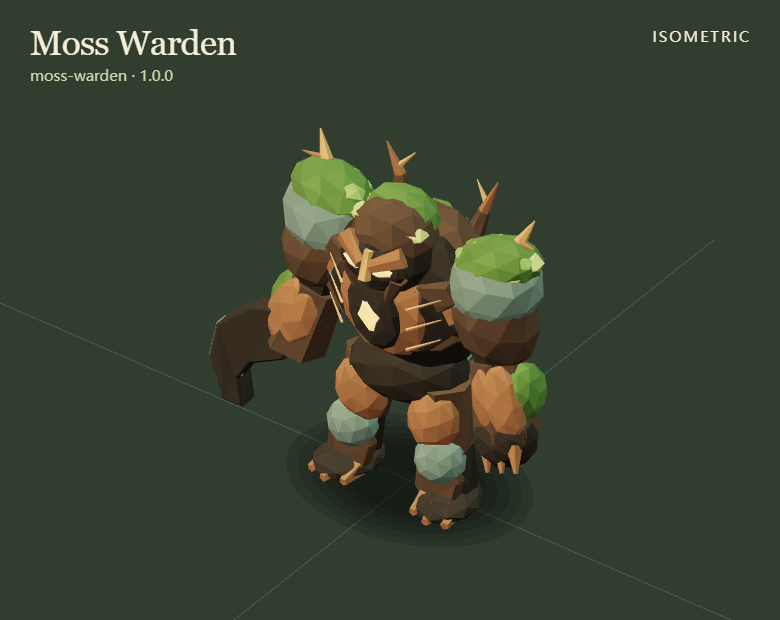

<!doctype html>
<html lang="zh-CN">
<meta charset="utf-8"><meta name="viewport" content="width=device-width,initial-scale=1">
<title>无尽之途 · 项目进度</title>
<style>
:root{color-scheme:dark;--ink:#f1efdf;--dim:#b9c4b8;--line:#38443c;--green:#9ed5a6;--gold:#e8ca89}*{box-sizing:border-box}body{margin:0;background:#131b19;color:var(--ink);font:16px/1.55 "Segoe UI","Microsoft YaHei",sans-serif}main{max-width:1100px;margin:auto;padding:40px 24px 70px}header{display:grid;grid-template-columns:1.3fr 1fr;align-items:center;border:1px solid var(--line);background:#1e2a23}header>div{padding:32px}header figure{margin:0;height:210px}header img{width:100%;height:100%;object-fit:cover}h1{font:500 clamp(28px,5vw,48px)/1.2 Georgia,serif;margin:8px 0 14px}h2{font-size:19px;margin:34px 0 12px}p{margin:.4em 0;color:var(--dim)}small,time{color:var(--gold)}button{padding:7px 13px;background:transparent;color:var(--dim);border:1px solid var(--line);border-radius:3px;cursor:pointer}button[aria-pressed=true]{background:#314536;color:#fff;border-color:#78967e}nav{display:flex;gap:6px;flex-wrap:wrap;margin:14px 0}.scroll{overflow:auto}table{width:100%;border-collapse:collapse;min-width:590px}th,td{text-align:left;padding:11px 12px;border-bottom:1px solid var(--line)}th{color:var(--dim);font-size:13px}td:first-child{width:30%}td:nth-child(2){min-width:120px}a{color:var(--gold);text-underline-offset:3px}.tag{white-space:nowrap}.tag:before{content:"";display:inline-block;width:9px;height:9px;background:var(--color);margin-right:8px;border-radius:50%}.legend{display:flex;flex-wrap:wrap;gap:16px}.progress{display:flex;height:10px;gap:2px;margin:14px 0}.progress span{background:var(--color)}@media(max-width:700px){main{padding:16px 12px}header{display:block}header>div{padding:20px}header figure{height:150px}}
</style>
<main>
<header><div><small>ENDLESS ODYSSEY</small><h1>首版项目进度</h1><p>14 个游戏系统 · 4 个工程支撑系统</p><time id="updated"></time></div><figure></figure></header>
<h2>交付状态</h2><div class="progress" id="bar"></div><div class="legend" id="summary"></div>
<p id="milestone"></p><nav id="filters" aria-label="进度筛选"></nav>
<div class="scroll"><table><thead><tr><th>系统</th><th>状态</th><th>当前证据或下一验收点</th></tr></thead><tbody id="rows"></tbody></table></div>
<p><a href="design/systems.md">系统规格与首版范围</a> · <a href="../equipment-system-design.md">装备原始规格</a></p>
</main>
<script>
const statuses = {'验收通过':'#96c99b','已运行':'#83bdce','联调中':'#d3ac68','后置':'#737f78'};
const updated = '2026-11-25 · 首版桌面验收';
const milestone = '绿色表示本次首版范围通过。23 项单测通过，3 项端到端回归各跑两次，6/6 通过；生产子路径检查通过。独立 Chrome 验收了画面与慢帧降级。';
const rows = [
['移动与镜头','验收通过','键鼠完成三段遭遇，侧移可躲避精英扇形攻击','evidence/elite.png'],
['角色属性与等级','验收通过','新角色由 1 级升至 3 级，重载恢复经验','acceptance.md'],
['战斗与状态','验收通过','伤害、暴击与派生效果有领域回归；新角色实际击败 Boss','evidence/victory.png'],
['技能与动作栏','验收通过','首版普攻与顺劈实战通过，其余三种主动技能后续扩充','design/skills-talents.md'],
['天赋树','验收通过','三分支 20 个节点，实测加点、洗点与恢复','evidence/talents.png'],
['怪物与行为','验收通过','猎犬、苔角守卫与裂木古王实战通过','evidence/elite.png'],
['地图与刷新','验收通过','营地出发、三段遭遇、胜利与回营','evidence/camp.png'],
['无限深渊','后置','固定关卡之后加入分层副本与难度成长','design/world.md'],
['掉落与拾取','验收通过','实际拾取、重复事件保护与 30 万次击杀模拟','evidence/loot-balance.json'],
['装备与背包','验收通过','六个槽位，换装比较、穿脱、满包与持久化','evidence/inventory.png'],
['材料与打造','验收通过','首版分解、材料与金币入账；强化和重铸后置','../equipment-system-design.md'],
['图鉴与成就','后置','深渊之后加入发现记录','design/world.md'],
['界面与反馈','验收通过','独立 Chrome 检查天赋焦点、背包格数、锁定反馈与画面','evidence/talents.png'],
['本地存档','验收通过','正常重载、历史角色、未知格式保护与并发写入检查','acceptance.md'],
['工程 · 游戏运行时','验收通过','Three.js、Rapier 与慢帧下的自适应渲染','evidence/low-fps.json'],
['工程 · 配置与平衡','验收通过','各 10 万次击杀，三类掉落、品质与词条统计','evidence/loot-balance.json'],
['工程 · AI 资产流水线','验收通过','森林精英从规格到 GLB 入库；超预算及损坏候选拒收','../public/assets/previews/moss-warden/1.0.0/report.json'],
['工程 · 验收与发布','验收通过','本地构建、真实浏览器与静态子路径通过；线上发布待安排','acceptance.md']
];
const $ = id=>document.getElementById(id);
$('updated').textContent=updated;$('milestone').textContent=milestone;
function tag(status,text){const el=document.createElement('span');el.className='tag';el.style.setProperty('--color',statuses[status]);el.textContent=text;return el}
for(const s of Object.keys(statuses)){const n=rows.filter(r=>r[1]===s).length;if(!n)continue;const seg=document.createElement('span');seg.style.flex=n;seg.style.setProperty('--color',statuses[s]);$('bar').append(seg);$('summary').append(tag(s,s+' '+n+' 项'))}
function draw(filter){$('rows').replaceChildren();for(const [name,status,detail,href] of rows){if(filter!=='全部'&&filter!==status)continue;const tr=$('rows').insertRow();tr.insertCell().textContent=name;tr.insertCell().append(tag(status,status));const cell=tr.insertCell();if(href){const a=document.createElement('a');a.href=href;a.textContent=detail;cell.append(a)}else cell.textContent=detail}for(const b of $('filters').children)b.setAttribute('aria-pressed',String(b.textContent===filter))}
for(const name of ['全部',...Object.keys(statuses)]){const b=document.createElement('button');b.textContent=name;b.onclick=()=>draw(name);$('filters').append(b)}draw('全部');
</script></html>
